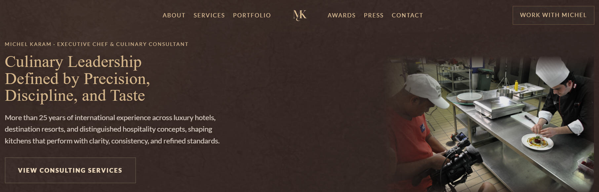
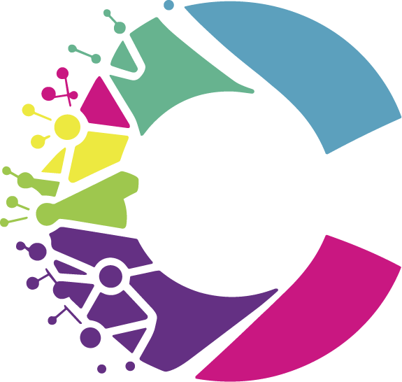

إدارة المشاريع والتنفيذ
التخطيط، والتنسيق، والمتابعة، ودعم القرارات، والإشراف على التسليم للمشاريع التجارية والرقمية التي تحتاج إلى هيكلة أوضح، وزخم أقوى، وتنفيذ أكثر انضباطًا.
مستشارة أعمال في لبنان
تساعد Chassis المؤسسين والشركات المتنامية على بناء تموضع أقوى، وعمليات أكثر دقة، وأنظمة تنفيذ تحوّل الجهد المتشتت إلى عمل منظم وقابل للإدارة.
إذا كان العمل قائمًا بالكامل على صاحب المشروع، فهذا يعني أن الهيكلة مكسورة.
الهيكلة تسبق النمو.
التنفيذ أهم من الأفكار.
التخطيط، والتنسيق، والمتابعة، ودعم القرارات، والإشراف على التسليم للمشاريع التجارية والرقمية التي تحتاج إلى هيكلة أوضح، وزخم أقوى، وتنفيذ أكثر انضباطًا.
وضوح سير العمل، والتفكير المنظومي، وتحديد الأدوار، ومنطق الإجراءات التشغيلية، وتحسين طريقة إدارة العمل للشركات التي تعاني من الاحتكاك أو العشوائية أو ضعف الاتساق.
بناء مواقع إلكترونية عالية المستوى تنطلق من التمركز، ووضوح المحتوى، وتجربة الاستخدام، وحضور رقمي يعكس المستوى الحقيقي للأعمال.
جلسة عمل مركزة لأصحاب الأعمال الذين يحتاجون إلى تشخيص أوضح، واتجاه أدق، وخطوة تالية أقوى قبل الالتزام بمشروع أكبر في الهيكلة أو التنفيذ.
دراسة حالة
حالة تطوير أعمال حيّة بُنيت حول التمركز، والهيكلة، والسلطة الرقمية.
عملت Chassis على الأساس الذي يقف خلف العلامة — من توضيح الاتجاه، وصياغة العرض، وتقوية الهيكلة، إلى بناء موقع إلكتروني فاخر يدعم الثقة، والظهور، والتمركز طويل المدى.
عرض دراسة الحالة

توجيه للعلامة، وهيكلة للتمركز، وتنفيذ لموقع إلكتروني فاخر لخبير طهو يعمل على بناء سلطة طويلة المدى.

إعادة صياغة الحضور الرقمي باتجاه مصداقية أقوى، وتمركز أوضح، وطريقة عرض أكثر تنظيمًا للأعمال.
التعاون
تعمل Chassis بأفضل صورة مع المؤسسين والشركات الجادّين في الوضوح، والتنفيذ، وبناء شيء أقوى من الجهد المتشتت.